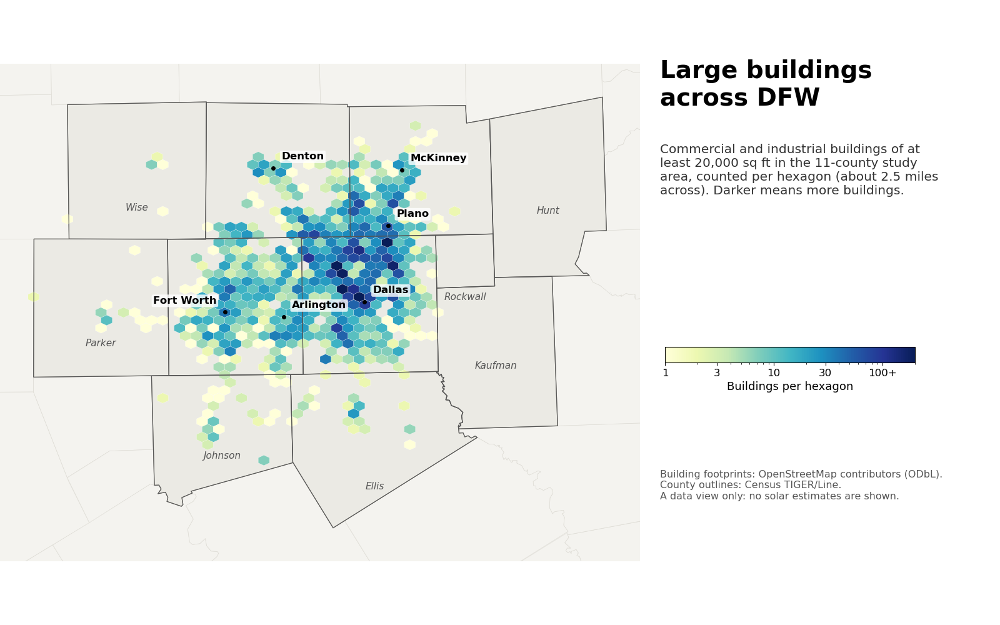

Building Asset Mapping: Rooftop Solar Across DFW
Could solar panels on the roofs of large private buildings supply Dallas–Fort Worth's growing electricity demand right where it is used?
- Manuscript in preparation
- 2026–present
- Rooftop solar
- Buildings
- GIS
- EV charging

In plain English
Dallas–Fort Worth is adding people, businesses and electric vehicles, and the power lines that carry electricity are becoming a constraint. Large warehouses, stores and offices have wide, flat roofs that sit right where power is used. This project asks whether rooftop solar on large private commercial and industrial buildings could supply a meaningful share of the region's demand close to home, and what it would take for that to hold hour by hour.
Students built an inventory of large buildings, at least 20,000 square feet, across 11 counties from open data: OpenStreetMap building footprints, Census household counts, public EV-charging locations and solar data from the National Solar Radiation Database. The current plan compares rooftop output with nearby demand on an equal-area grid, sizes the batteries needed to carry midday solar into the evening, and asks where fast chargers at large retailers and truck depots could run on those roofs. A manuscript is in preparation.
Main points
- Maps large commercial and industrial buildings across 11 Dallas–Fort Worth counties using only open data.
- Estimates each building's rooftop solar output and compares it with the demand of the building and its neighbors.
- Tests the idea hour by hour, sizing battery storage so daytime solar can serve evening demand.
- Treats electric car and truck charging at big-box stores, grocers and distribution centers as the growing load to serve.
- Plans to add county appraisal records to classify buildings by use and ownership, with a companion study of public buildings.
People
- Erick C. Jones Jr., PhD, PEPrincipal Investigator · SEAR Lab directorin
Fall 2026 team: names to be added from the lab personnel sheet. Profiles marked in link to LinkedIn. More past and present lab members are on the SEAR Lab team page.